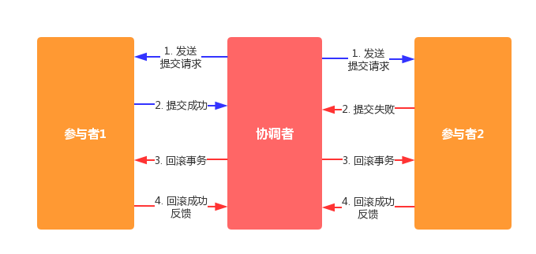

分布式 - 一致性协议
概念
很多时候说到一致性的时候，很容易与把单机数据库的一致性概念与分布式一致性的概念弄混。
单机一致性
回忆 CAP 原理，单机数据库符合 CA 模型，所以这里的一致性一般是强一致性，即我们非常熟悉的数据库中的 ACID 原则。
分布式一致性
分布式事务是指会涉及到操作多个数据库的事务，其实就是将对同一库事务的概念扩大到了对多个库的事务。目的是为了保证分布式系统中的数据一致性。
分布式事务处理的关键是：
- 需要记录事务在任何节点所做的所有动作。
- 事务进行的所有操作要么全部提交，要么全部回滚。
分布式一致性算法还有有两个重要的属性：
- 活性(liveness)，即指那些一定会发生的事情
- 安全性(safety)，即指那些一定不会发生的事情
XA 规范
XA规范是由 X/Open 组织定义的分布式事务处理模型，包含以下四个组成部分：
- 应用程序(AP)
- 事务管理器(TM)：交易中间件等
- 资源管理器(RM)：关系型数据库等
- 通信资源管理器(CRM)：消息中间件等
XA规范定义了交易中间件与数据库之间的接口规范（即接口函数），交易中间件用它来通知数据库事务的开始、结束以及提交、回滚等。
而XA接口函数由数据库厂商提供。即：
- 配置TM，给TM注册RM作为数据源。其中，一个TM可以注册多个RM。
- AP向TM发起一个全局事务。这时，TM会发送一个XID（全局事务ID）通知各个RM。
- AP从TM获取资源管理器的代理（例如：使用JTA接口，从TM管理的上下文中，获取出这个TM所管理的RM的JDBC连接或JMS连接）。
- AP通过从TM中获取的连接，间接操作RM进行业务操作。TM在每次AP操作时把XID传递给RM，RM正是通过这个XID关联来操作和事务的关系的。
- AP结束全局事务时，TM会通知RM全局事务结束。开始二段提交，也就是prepare - commit的过程。
2PC
分布式环境下虽然单机中每个节点都能明确知道自己事务提交结果，但是无法直接获得其他节点的操作结果。
所以引入一个组件来保存事务处理 ACID 的特性，即协调者(Coordinator)来统一调度所有分布式节点的执行逻辑。
那么被调度的节点就称为参与者(Participant)。
2PC 即两段式提交协议(Two-Phase Commit)。是为了保存事务原子性和一致性设计的一种算法。而且绝大部分关系型数据库也是采用 2PC 算法来保证一致性的。
阶段一
提交事务请求
- 事务询问
- 协调者向所有参与者发送事务内容，询问是否可以执行，并等待响应。
- 执行事务
- 各参与者执行事务，并在事务日志中记录 Undo 和 Redo 信息。
- 参与者响应
- 各参与者给予协调者事务执行结果的反馈。
类似于协调者组织参与者对一次事务操作的投票表态过程，因此这一阶段也可以叫做投票阶段。
阶段二
执行事务提交
执行事务提交还有可能有两种情况，直接执行事务提交，或者中断事务。
如果各参与者都反馈了成功执行的响应。那么就会执行事务提交：
- 发送提交请求
- 协调者向各参与者发出 Commit 请求。
- 事务提交
- 参与者收到 Commit 请求后，正式提交事务，并释放事务资源。
- 反馈提交结果
- 参与者完成提交后，向协调者发送 Ack 信息。
- 完成事务
- 协调者收到所有 Ack 信息，事务完成。
如果有参与者执行失败，那么就中断事务：
- 发送回滚请求
- 协调者向各参与者发出 Rollbakc 请求。
- 事务回滚
- 参与者收到 Rollback 请求后，使用日志中的 Undo 来执行事务回滚，并释放资源。
- 反馈回滚结果
- 参与者完成回滚后，向协调者发送 Ack 信息。
- 中断事务
- 协调者收到所有参与者的 Ack 信息，完成事务中断。

即将事务分为投票和执行两个阶段。对每个事务都采用先尝试后提交的处理方式。因此可以将两段式提交视作一种强一致性算法。
优缺分析
优点：原理简单，实现方便。
缺点：同步阻塞，单点问题，脑裂，过于保守。
- 同步阻塞，在第二阶段提交时所有参与者都会阻塞。
- 单点问题，无法保证协调者的稳定。
- 数据不一致，如果第二阶段发送 Commit 请求时如果只有部分节点接收到，会发生数据不一致。
- 容错性不好，二阶段没有比较好的容错机制。
3PC
其实容易看出 2PC 的问题在于二阶段没有比较好的容错机制。所以提出了 3PC 来改善。三阶段提交有两个改善：
- 引入超时机制，同时在协调者和参与者中都引入超时机制。
- 在第一阶段和第二阶段中插入一个准备阶段，保证了在最后提交阶段之前各参与节点的状态是一致的。
阶段一
CanCommit
- 事务询问
- 协调者发送一个包含事务的 canCommit 请求
- 反馈询问结果
- 收到 canCommit 请求后，可以执行反馈 Yes，否则 No
阶段二
PreCommit
同理分为执行提交和中断事务两种情况：
如果都是 Yes 反馈，执行事务预提交：
- 发送预提交请求
- 协调者向各参与者发送 preCommit 请求，并进入 Prepared 阶段。
- 事务预提交
- 参与者收到 preCommit 请求，执行事务，并记录 Undo 和 Redo 日志。
- 反馈提交结果
- 参与者成功执行反馈 Ack，同时等待最终指令，commit 或 abort
如果存在 No 反馈，执行事务中断：
- 发送中断请求
- 协调者向各节点发送 abort 球球
- 中断事务
- 如果收到 abort 请求或等到协调者超时，都会中断事务。
阶段三
doCommit
进行真正的事务提交，还是分为两种情况来讨论：
执行提交：
- 发送提交请求
- 协调者收到了所有 Ack 响应，从预提交转到提交状态，并发送 doCommit 请求。
- 事务提交
- 执行提交，释放资源
- 反馈事务提交结果
- 提交成功发送 Ack
- 完成事务
- 协调者收到所有 Ack 完成事务
如果进入这一阶段，协调者正常，并且有任意一个参与者反馈了 No 响应或等待超时，就会
中断事务：
- 发送中断请求
- 协调者发送 Abort 请求
- 事务回滚
- 参与收到 Abort 请求，使用 Undo 日志来回滚
- 反馈回滚结果
- 参与者回滚完毕发送 Ack
- 中断事务
- 协调者收到所有 Ack，事务成功中断
需要注意的是，一旦进入阶段三，可能会存在以下两种故障：
- 协调者出现问题
- 协调者与参与者之间网络故障
无论哪种情况，在参与者等待第三阶段的 doCommit 和 abort 请求超时时会继续事务的提交。
优缺分析
优点：
- 降低了参与者的阻塞范围
- 出现单点故障后能保持一致性
缺点：
- 参与者接受到 preCommit 之后，如果网络分区，协调者和参与者无法通信，参与者继续事务提交，会违反一致性。
Paxos
占拜庭问题说明了，从理论上想要在异步和不可靠信道上达到一致状态是不可能的。所以我们在研究一致性的过程中往往假设信道是可靠的。即：
- 存在节点宕机或网络异常 (包括消息的重复、丢失、延迟、乱序、网络分区)等情况。
- 但信息不会被损坏或篡改。
Paxos 算法主要就是解决如何在一个 发生如上故障的分布式系统中，快速正确的在集群内对某个值达成一致，并且保证整个系统的一致性。
节点角色
- Proposer : 负责提出提案 (Proposal)。
- Accecptor : 负责接受提案，一旦接受提案，提案里面的 value 值就被选定了。
- Learner : Acceptor 告诉 Learner 哪个提案被选定了，那么 Learner 就学习这个被选择的 value。
协议过程
Paxos 基于2PC进行了扩展。可以对比一下过程的差异。
以下是 Proposer 与 Accecptor 协商过程，具体推导过程可以查看参考2：
准备(Prepare)阶段
- Proposer 选定提议 P1(x, v)，其中 x 表示序号，v 表示值。Proposer 将这个提议发送给 Accecptor，等待大多数节点的返回。
- Acceptor在收到提议 P1(x, v)后，判断：
- 如果提议是该 Acceptor 收到的第一个提议，必须接受，该 Acceptor 保证未来不会接受序号小于 x 的请求。
- 如果该 Acceptor 之前有接受过提议，比较 x 和之间和之前接受的最高序列号的提议，比如 P2(y,v2)：
- 如果 x<y，回复拒绝和 y 值
- 如果 x>y，回复同意和 P2(y, v2)
接受(Accept)阶段
- 如果大半 Acceptor 拒绝提议或无回复，Proposer 取消本次提议。
- 如果大半 Acceptor 接受提议。Proposer 从这些值中任选一个值（如果没有值被接受，选择自己的值）。发送 Accept(x, v)。
- 当 Acceptor 收到 Accept(x, v)，如果满足下面的两个条件，就发送 Accept ，否则返回 error。
- v 和之前接受的某个值相同
- x 是该 Acceptor 所接受提议中序列号的最大值
- 当 Acceptor 收到 Accept(x, v)，如果满足下面的两个条件，就发送 Accept ，否则返回 error。
- 如果 Proposer 发现没用过半节点 Accept，则取消这次提议然后重新开始，否则协商结束。
如果我们指定集群中同一时间只能有一个 Proposer 作为 Leader，并且要求所有节点都要投票呢？Paxos 算法就会退化 2PC，所以实际上 2PC 是 Paxos 的一个特例。
活性保证
如果有两个 Proposer 依次提出编号递增的提案，可能会导致系统陷入死循环。
即可以通过选取主 Proposer 作为一个 Leader 节点来保证算法的活性。
一般的实践中比如 ZAB 算法就是这么做的。
Learner 策略
如果一个value 被选定，Learner 学习选定 value 方案也有不同的方案：
小结